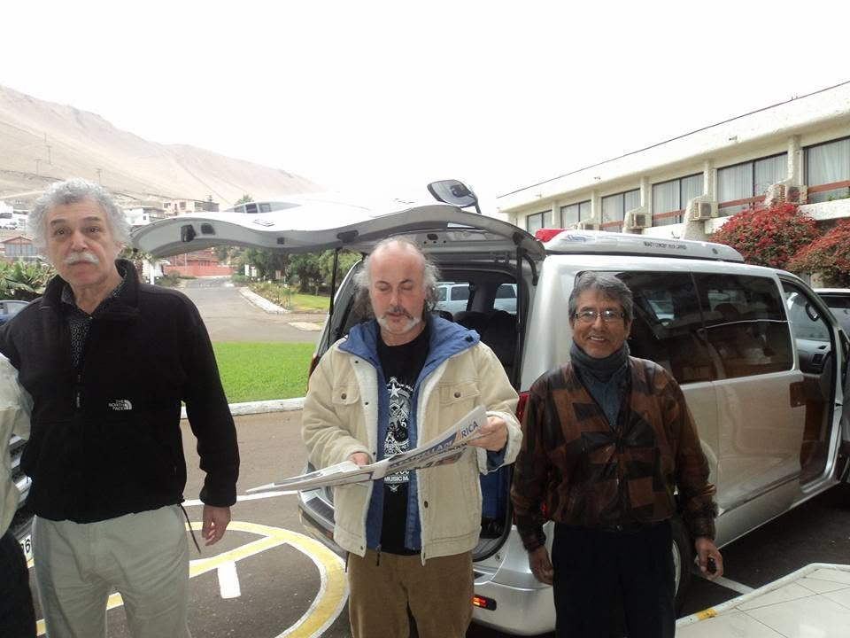

Traslado de artistas y equipos de producción en Arica
Llevamos artistas, músicos y equipos de producción entre el aeropuerto, el hotel y el escenario, con espacio para instrumentos y horarios que se ajustan al montaje y al show.
Un evento se cae por los traslados, no por el show
Cuando llega un artista a Arica, el itinerario real no es solo el concierto: es el vuelo que aterriza de madrugada, la prueba de sonido a media tarde, la entrevista en una radio, la comida antes del show y el regreso al hotel cuando ya no queda nadie despierto. Nosotros nos hacemos cargo de esa cadena completa, con el vehículo disponible durante toda la estadía.
Trabajamos con productoras, managers, municipios y organizadores de festivales, y sabemos que en este rubro los horarios cambian sobre la marcha. El conductor queda coordinado con la producción, no con una planilla fija.
Qué cubrimos
- Recepción en el Aeropuerto Chacalluta y traslado al hotel.
- Movimientos entre hotel, escenario, prueba de sonido y medios de prensa.
- Espacio para instrumentos, vestuario y equipos de la producción.
- Traslado del equipo técnico, que suele llegar y salir en horarios distintos al artista.
- Vehículo a disposición por horas o por día completo, incluidas madrugadas.
- Discreción: lo que pasa a bordo no se comenta ni se publica.
Vehículos según el tamaño de la gira
Para un artista con su manager basta un sedán ejecutivo. Para una banda con instrumentos usamos van, y para delegaciones grandes o elencos completos, minibús. Si el grupo viaja con mucho equipaje técnico, coordinamos un vehículo adicional para que nadie viaje incómodo entre cajas.
Eventos, festivales y delegaciones
El mismo servicio funciona para cualquier evento que traiga gente de fuera a Arica: festivales, ferias, seminarios, campeonatos y delegaciones que llegan por unos días. Armamos con la organización un plan de movimientos —llegadas al aeropuerto, hotel, recinto y salidas— y dejamos los vehículos asignados a esos horarios, incluidas las madrugadas.
También cruzando a Tacna
Si la gira sigue al otro lado de la frontera, hacemos el traslado hasta Tacna con el trámite fronterizo coordinado. Revisa los detalles del traslado de Arica a Tacna.
Para productoras y empresas
Emitimos factura y podemos trabajar con cuenta mensual si organizas eventos de forma frecuente en la ciudad. También movemos al staff y a los proveedores del evento cuando la producción lo necesita.
Preguntas Frecuentes
Lo que consultan productoras y managers antes de contratar.
¿Tienen espacio para instrumentos y equipos?
Sí. Según lo que traiga la producción asignamos van o minibús con espacio de carga, y si el equipaje técnico es mucho coordinamos un vehículo adicional para no apretar a los pasajeros.
¿Pueden trabajar con horarios que cambian a última hora?
Sí, es lo habitual en este rubro. El conductor queda coordinado directamente con la producción y se ajusta a los cambios de prueba de sonido, prensa o show sin recargo por reprogramar.
¿Atienden vuelos y shows de madrugada?
Sí. Operamos las 24 horas, los 7 días de la semana, y no cobramos recargo por horario nocturno, que es justamente cuando terminan los eventos.
¿Emiten factura a la productora?
Sí. Emitimos factura a nombre de la productora o de la empresa organizadora, y podemos trabajar con cuenta mensual si los eventos son frecuentes.
¿Atienden eventos de varios días con más de un vehículo?
Sí. Para un evento de varios días armamos un plan de movimientos y asignamos uno o varios vehículos según el itinerario, con un solo contacto para toda la coordinación en lugar de pedir un auto cada vez.
¿Cómo se cobra el transporte de un evento?
Por horas, por día completo o por el paquete del evento, según lo que resulte más conveniente. Se cotiza antes con el itinerario en mano y se factura a la productora o a la empresa organizadora.
Otros servicios
Todo lo que podemos hacer por ti en Arica, la región y Tacna.
¿Tienes un show en Arica?
Escríbenos ahora por WhatsApp y cotiza tu servicio en minutos.
Atención inmediata, sin esperas, los 7 días de la semana.
También puedes llamarnos: +56 9 9162 2929